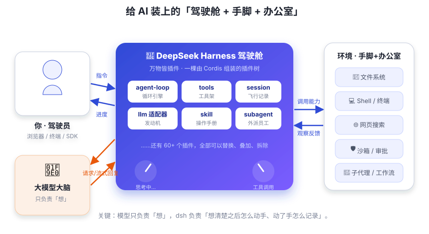

一分钟看懂 dsh
模型负责「想」，dsh 负责「动手 + 记录」。本章用一个比喻建立全部直觉。
你让一个只会聊天的 AI 帮你「把仓库里的测试跑一下，然后修掉失败的那个」。AI 认真地回复：「好的！这是一个好主意。」 然后……什么也没发生。它没有手、没有终端，连你硬盘上有什么都不知道——活脱脱一位没手没脚、还没出过门的哲学家：谈人生可以，搬砖免谈。
DeepSeek Harness 就是来解决这个问题的：它给 AI 装上「手」（工具：读写文件、跑命令、搜网页）、「办公室」（会话、工作区、沙箱）和「工作日志」（每一步都被记录），让模型能真正把事办完——毕竟咱们请 AI 是来干活的，不是来听彩虹屁的。

拆开看：三个角色各干什么
① 大模型：只负责「想」
大语言模型（LLM）擅长的是思考与表达：理解你的话、推理、决定下一步做什么、生成回复。 但它天生不接触世界——它不知道你的文件在哪，不能真的运行命令。 模型对外界的唯一窗口是「文字」：你告诉它世界长什么样，它相信你。
② dsh：模型与世界的「驾驶舱」
dsh 是夹在模型与世界之间的那层框架。它做四件事：
- 给模型一双眼睛和手：把「读文件」「跑命令」「搜网页」注册成一个个工具，让模型能调用；
- 给模型一个「记忆」：用会话日志记录对话全过程，模型每次开口前都能「回看」；
- 给模型一个「工作台」：工作区、沙箱、审批 —— 让它动手时有边界、有监督；
- 给模型一群「同事」：子代理、后台任务、工作流 —— 一个人干不完的活可以派出去。
③ 你：坐在驾驶位上的人
你通过浏览器界面（Web UI）、命令行（headless）或 SDK 跟 dsh 打交道： 发任务、看进度、批准高风险操作、审查它做了什么。
Harness 原意是「马具 / 挽具」：让马能拉车的那套装备。 类比过来就是：让模型能干活的那套装备。 英文里还常说 Agent Harness / Agent Framework —— 指把模型、工具、记忆、执行环境组装起来、 让 agent（智能体）真正跑起来的框架层。
它不是什么（常见误解）
| 误解 | 真相 |
|---|---|
| dsh 是一个大模型？ | 不是。模型是「大脑」，dsh 是「身体 + 办公系统」。dsh 需要接一个模型（默认 DeepSeek API）才能工作。 |
| dsh 是一个聊天网站？ | 聊天只是它的一个入口。它更擅长的是「交代一个任务，让 agent 自己想办法完成」。 |
| dsh 是一套写死的程序？ | 恰恰相反：它是「万物皆插件」的框架，连它自己的循环逻辑都是插件，你可以替换任何部分。 |
| dsh 是给 AI 用的？ | 它确实也面向 AI（agent 可以改自己的配置），但主要是给开发者/用户用来构建和运行 agent 的。 |
① dsh 由 DeepSeek AI 开源，MIT 协议； ② 目前处于 developer preview（开发者预览）阶段，官方明确说「会有破坏性变更」。 所以学它时重点理解设计思想（插件化、事件溯源、能力缝），这些是稳定的骨架； 具体的配置字段可能随版本变化。
它跑起来长什么样？
安装 Node.js 后，一行命令就能启动 Web UI：
npx @deepseek-ai/dsh web
# 浏览器打开 http://127.0.0.1:3080
# 设置 → 模型 → 填入 DeepSeek API Key → 选择工作区 → 开聊第 11 章我们会亲手跑起来，还会拆开它的启动过程。现在先别急着装 —— 先把概念搭起来。
费曼自查
合上教程，试着用自己的话回答（点开看参考）。卡壳了？回看对应小节。